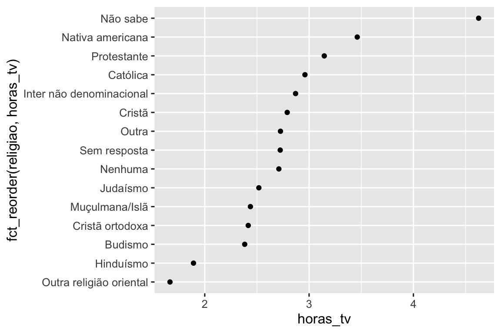
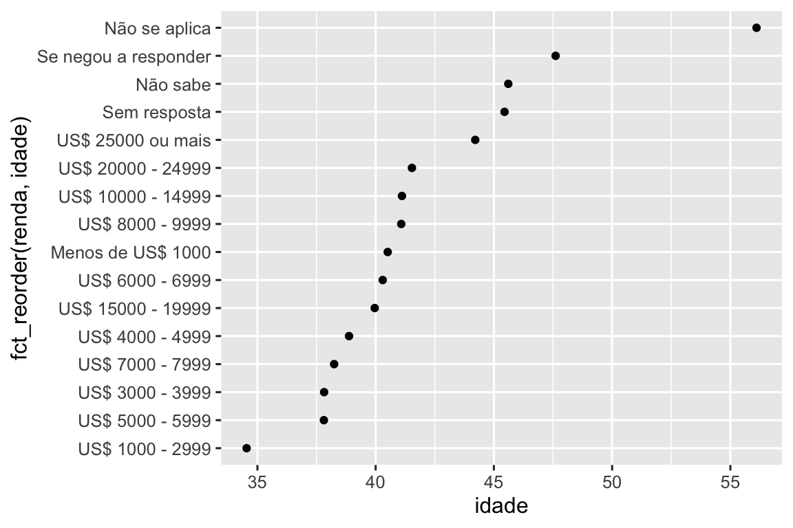
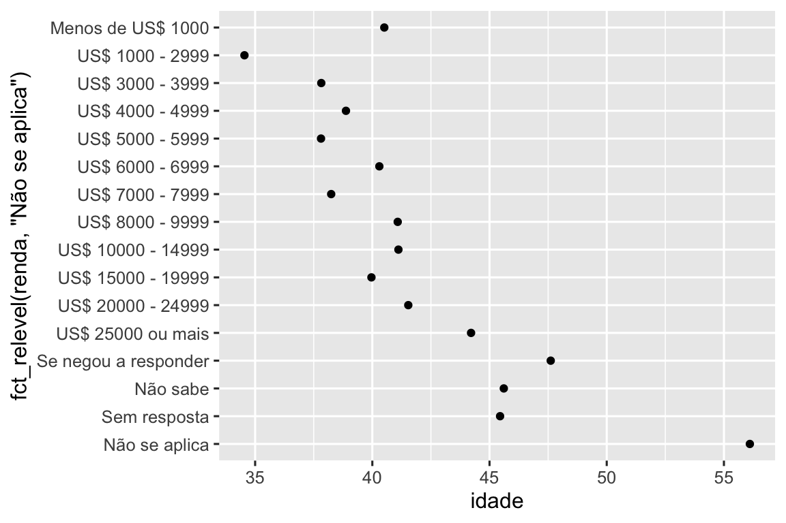
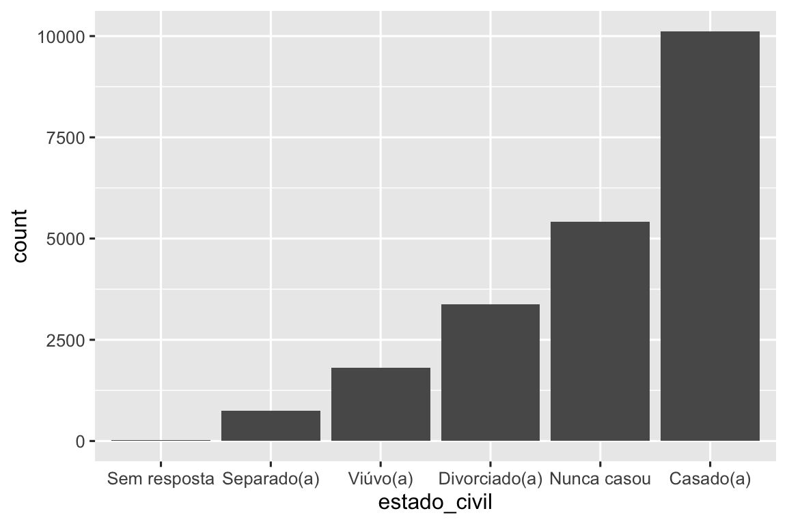

16 ✅ Fatores
16.1 Introdução
Fatores (factors) são usados para variáveis categóricas, variáveis que possuem um conjunto fixo e conhecido de valores possíveis. Eles também são úteis quando você deseja exibir vetores de caracteres em ordem não alfabética.
Começaremos motivando a necessidade de fatores para a análise de dados1 e como você pode criá-los com a função factor(). Em seguida, apresentaremos o conjunto de dados questionario do pacote dados, que contém um monte de variáveis categóricas para experimentarmos. Em seguida, você usará esse conjunto de dados para praticar a modificação da ordem e dos valores dos fatores, antes de terminarmos com uma discussão sobre fatores ordenados.
16.1.1 Pré-requisitos
O R base fornece algumas ferramentas básicas para criar e manipular fatores. Iremos complementá-las com o pacote forcats, que é um integrante do tidyverse. Ele fornece ferramentas para lidar com variáveis categóricas (e é um anagrama de fatores!) usando uma ampla gama de funções auxiliares para trabalhar com fatores.
16.2 O básico sobre fatores
Imagine que você tem uma variável que registra o mês:
x1 <- c("Dez", "Abr", "Jan", "Mar")Usar uma string para registrar esta variável tem dois problemas:
-
Existem apenas doze meses possíveis e não há nada que proteja você contra erros de digitação:
x2 <- c("Dez", "Abr", "Jam", "Mar") -
Não ordena de maneira útil:
sort(x1) #> [1] "Abr" "Dez" "Jan" "Mar"
Você pode corrigir esses dois problemas com um fator. Para criar um fator você deve começar criando uma lista com níveis (levels) válidos:
niveis_meses <- c(
"Jan", "Fev", "Mar", "Abr", "Mai", "Jun",
"Jul", "Ago", "Set", "Out", "Nov", "Dez"
)Agora você pode criar o fator:
E quaisquer valores que não estejam nos níveis serão convertidos silenciosamente para NA:
y2 <- factor(x2, levels = niveis_meses)
y2
#> [1] Dez Abr <NA> Mar
#> Levels: Jan Fev Mar Abr Mai Jun Jul Ago Set Out Nov DezIsso parece arriscado, então você pode querer usar forcats::fct() em vez disso:
y2 <- fct(x2, levels = niveis_meses)
#> Error in `fct()`:
#> ! All values of `x` must appear in `levels` or `na`
#> ℹ Missing level: "Jam"Se você omitir os níveis, eles serão retirados dos dados em ordem alfabética:
factor(x1)
#> [1] Dez Abr Jan Mar
#> Levels: Abr Dez Jan MarClassificar em ordem alfabética é um pouco arriscado porque nem todo computador classificará as strings da mesma maneira. Então forcats::fct() ordena pela primeira aparição:
fct(x1)
#> [1] Dez Abr Jan Mar
#> Levels: Dez Abr Jan MarSe você precisar acessar diretamente o conjunto de níveis válidos, poderá fazê-lo com levels():
levels(y2)
#> [1] "Jan" "Fev" "Mar" "Abr" "Mai" "Jun" "Jul" "Ago" "Set" "Out" "Nov" "Dez"Você também pode criar um fator ao ler seus dados com readr usando a col_factor():
csv <- "
mes,valor
Jan,12
Fev,56
Mar,12"
df <- read_csv(csv, col_types = cols(mes = col_factor(niveis_meses)))
df$mes
#> [1] Jan Fev Mar
#> Levels: Jan Fev Mar Abr Mai Jun Jul Ago Set Out Nov Dez16.3 Questionário
No restante deste capítulo, usaremos dados::questionario. É uma amostra de dados da Pesquisa Social Geral, uma pesquisa de longa data nos EUA conduzida pela organização de pesquisa independente NORC da Universidade de Chicago. A pesquisa tem milhares de perguntas, então em questionario, Hadley selecionou algumas que ilustrarão alguns desafios comuns que você encontrará ao trabalhar com fatores.
questionario
#> # A tibble: 21,483 × 9
#> ano estado_civil idade raca renda partido
#> <int> <fct> <int> <fct> <fct> <fct>
#> 1 2000 Nunca casou 26 Branca US$ 8000 - 9999 Independente, inclinaçã…
#> 2 2000 Divorciado(a) 48 Branca US$ 8000 - 9999 Não fortemente repubica…
#> 3 2000 Viúvo(a) 67 Branca Não se aplica Independente
#> 4 2000 Nunca casou 39 Branca Não se aplica Independente, inclinaçã…
#> 5 2000 Divorciado(a) 25 Branca Não se aplica Não fortemente democrata
#> 6 2000 Casado(a) 25 Branca US$ 20000 - 24999 Fortemente democrata
#> # ℹ 21,477 more rows
#> # ℹ 3 more variables: religiao <fct>, denominacao <fct>, horas_tv <int>(Lembre-se, como este conjunto de dados é fornecido por um pacote, você pode obter mais informações sobre as variáveis com ?questionario.)
Quando os fatores são armazenados em um tibble, você não consegue ver seus níveis tão facilmente. Uma maneira de visualizá-los é com count():
questionario |>
count(raca)
#> # A tibble: 3 × 2
#> raca n
#> <fct> <int>
#> 1 Outra 1959
#> 2 Negra 3129
#> 3 Branca 16395Ao trabalhar com fatores, as duas operações mais comuns são alterar a ordem dos níveis e alterar os valores dos níveis. Essas operações são descritas nas seções abaixo.
16.3.1 Exercícios
Explore a distribuição de
renda(renda informada). O que torna o gráfico de barras padrão difícil de ser entendido? Como você pode melhorar o gráfico?Qual a
religiaomais comum neste questionário? Qual opartidomais comum?Qual
denominacaose aplica a qualreligiao? Como você pode descobrir isso com uma tabela? Como você pode descobrir isso com uma visualização?
16.4 Modificando a ordem de um fator
Muitas vezes é útil alterar a ordem dos níveis dos fatores em uma visualização. Por exemplo, imagine que você deseja explorar o número médio de horas gastas assistindo TV por dia em todas as religiões:
resumo_religiao <- questionario |>
group_by(religiao) |>
summarize(
horas_tv = mean(horas_tv, na.rm = TRUE),
n = n()
)
ggplot(resumo_religiao, aes(x = horas_tv, y = religiao)) +
geom_point()
É difícil ler esse gráfico porque não existe um padrão geral. Podemos melhorá-lo reordenando os níveis de religiao usando fct_reorder(). fct_reorder() possui três argumentos:
-
f, o fator cujos níveis você deseja modificar. -
x, um vetor numérico que você deseja usar para reordenar os níveis. - Opcionalmente,
fun, uma função que é usada se houver vários valores dexpara cada valor def. A função padrão émedian.
ggplot(resumo_religiao, aes(x = horas_tv, y = fct_reorder(religiao, horas_tv))) +
geom_point()
Reordenar a religião torna muito mais fácil ver que as pessoas na categoria “Não sabe” assistem muito mais TV, e o Hinduísmo e outras religiões orientais assistem muito menos.
À medida que você começa a fazer transformações mais complicadas, recomendamos movê-las de aes() para uma etapa separada, usando mutate(). Por exemplo, você poderia reescrever o gráfico acima como:
resumo_religiao |>
mutate(
religiao = fct_reorder(religiao, horas_tv)
) |>
ggplot(aes(x = horas_tv, y = religiao)) +
geom_point()E se criarmos um gráfico semelhante observando como a idade média varia de acordo com o nível de renda informada?
resumo_renda <- questionario |>
group_by(renda) |>
summarize(
idade = mean(idade, na.rm = TRUE),
n = n()
)
ggplot(resumo_renda, aes(x = idade, y = fct_reorder(renda, idade))) +
geom_point()
Aqui, reordenar arbitrariamente os níveis não é uma boa ideia! Isso porque renda já tem uma ordem fundamentada com a qual não devemos mexer. Reserve fct_reorder() para fatores cujos níveis são ordenados arbitrariamente.
No entanto, faz sentido colocar “Não se aplica” na frente com os outros níveis especiais. Você pode usar fct_relevel(). É necessário um fator, f, e então qualquer número de níveis que você deseja mover para o início da linha.
ggplot(resumo_renda, aes(x = idade, y = fct_relevel(renda, "Não se aplica"))) +
geom_point()
Por que você acha que a idade média para “Não se aplica” é tão alta?
Outro tipo de reordenação é útil quando você está colorindo as linhas em um gráfico. fct_reorder2(f, x, y) reordena o fator f pelos valores y associados aos maiores valores x. Isso torna o gráfico mais fácil de ler porque as cores da linha na extremidade direita do gráfico se alinharão com a legenda.
por_idade <- questionario |>
filter(!is.na(idade)) |>
count(idade, estado_civil) |>
group_by(idade) |>
mutate(
prop = n / sum(n)
)
ggplot(por_idade, aes(x = idade, y = prop, color = estado_civil)) +
geom_line(linewidth = 1) +
scale_color_brewer(palette = "Set1")
ggplot(por_idade, aes(x = idade, y = prop, color = fct_reorder2(estado_civil, idade, prop))) +
geom_line(linewidth = 1) +
scale_color_brewer(palette = "Set1") +
labs(color = "estado civil") ![Um gráfico de linha com idade no eixo-x e proporção no eixo-y. Há uma linha para cada categoria de estado civil: sem resposta, nunca casou, separado(a), divorciado(a), viúvo(a) e casado(a). O gráfico é um pouco difícil de ler porque a ordem da legenda não é relacionada às linhas do gráfico. Reorganizar a legenda faz o gráfico ser mais fácil de ser lido porque as cores da legenda agora correspondem à ordem das linhas na extremidade direita do gráfico. Você pode ver alguns padrões não surpreendentes: a proporção de nunca casados(as) diminui com a idade, casado(a) forma um U de cabeça para baixo e viúvo(a) começa baixo, mas aumenta acentuadamente após os 60 anos.](factors_files/figure-html/unnamed-chunk-21-1.png)
![Um gráfico de linha com idade no eixo-x e proporção no eixo-y. Há uma linha para cada categoria de estado civil: sem resposta, nunca casou, separado(a), divorciado(a), viúvo(a) e casado(a). O gráfico é um pouco difícil de ler porque a ordem da legenda não é relacionada às linhas do gráfico. Reorganizar a legenda faz o gráfico ser mais fácil de ser lido porque as cores da legenda agora correspondem à ordem das linhas na extremidade direita do gráfico. Você pode ver alguns padrões não surpreendentes: a proporção de nunca casados(as) diminui com a idade, casado(a) forma um U de cabeça para baixo e viúvo(a) começa baixo, mas aumenta acentuadamente após os 60 anos.](factors_files/figure-html/unnamed-chunk-21-2.png)
Finalmente, para gráficos de barras, você pode usar fct_infreq() para ordenar os níveis em frequência decrescente: este é o tipo mais simples de reordenação porque não precisa de nenhuma variável extra.. Combine-a com a fct_rev() se desejar que eles aumentem a frequência, de modo que no gráfico de barras os maiores valores fiquem à direita, não à esquerda.
questionario |>
mutate(estado_civil = estado_civil |> fct_infreq() |> fct_rev()) |>
ggplot(aes(x = estado_civil)) +
geom_bar()
16.4.1 Exercícios
Existem alguns números suspeitosamente altos em
horas_tv. A média é um bom resumo?Para cada fator em
questionario, identifique se a ordem dos níveis é arbitrária ou fundamentada.Por que mover “Não se aplica” para a frente dos níveis o moveu para a parte inferior do gráfico?
16.5 Modificando os níveis do fator
Mais poderoso do que alterar as ordens dos níveis é alterar os seus valores. Isso permite esclarecer rótulos para publicação e recolher níveis para exibições de alto nível. A ferramenta mais geral e poderosa é fct_recode(). Ela permite recodificar, ou alterar, o valor de cada nível. Por exemplo, pegue a variável partido do data frame questionario:
questionario |> count(partido)
#> # A tibble: 10 × 2
#> partido n
#> <fct> <int>
#> 1 Sem resposta 154
#> 2 Não sabe 1
#> 3 Outro partido 393
#> 4 Fortemente republicano 2314
#> 5 Não fortemente repubicano 3032
#> 6 Independente, inclinação republicana 1791
#> # ℹ 4 more rowsOs níveis são concisos e inconsistentes. Vamos ajustá-los para serem mais longos e usar uma construção paralela. Como a maioria das funções de renomeação e recodificação no tidyverse, os novos valores ficam à esquerda e os valores antigos à direita:
questionario |>
mutate(
partido = fct_recode(partido,
"Indivíduo fortemente republicano" = "Fortemente republicano",
"Indivíduo não fortemente republicano" = "Não fortemente republicano",
"Indivíduo independente com inclinação republicana" = "Independente, inclinação republicana",
"Indivíduo independente com inclinação democrata" = "Independente, inclinação democrata",
"Indivíduo não fortemente democrata" = "Não fortemente democrata",
"Indivíduo fortemente democrata" = "Fortemente democrata"
)
) |>
count(partido)
#> Warning: There was 1 warning in `mutate()`.
#> ℹ In argument: `partido = fct_recode(...)`.
#> Caused by warning:
#> ! Unknown levels in `f`: Não fortemente republicano
#> # A tibble: 10 × 2
#> partido n
#> <fct> <int>
#> 1 Sem resposta 154
#> 2 Não sabe 1
#> 3 Outro partido 393
#> 4 Indivíduo fortemente republicano 2314
#> 5 Não fortemente repubicano 3032
#> 6 Indivíduo independente com inclinação republicana 1791
#> # ℹ 4 more rowsfct_recode() deixará os níveis que não são explicitamente mencionados como estão e irá avisá-lo se você acidentalmente se referir a um nível que não existe.
Para combinar grupos, você pode atribuir vários níveis antigos a um mesmo nível novo:
questionario |>
mutate(
partido = fct_recode(partido,
"Indivíduo fortemente republicano" = "Fortemente republicano",
"Indivíduo não fortemente republicano" = "Não fortemente republicano",
"Indivíduo independente com inclinação republicana" = "Independente, inclinação republicana",
"Indivíduo independente com inclinação democrata" = "Independente, inclinação democrata",
"Indivíduo não fortemente democrata" = "Não fortemente democrata",
"Indivíduo fortemente democrata" = "Fortemente democrata",
"Outro" = "Sem resposta",
"Outro" = "Não sabe",
"Outro" = "Outro partido"
)
)
#> Warning: There was 1 warning in `mutate()`.
#> ℹ In argument: `partido = fct_recode(...)`.
#> Caused by warning:
#> ! Unknown levels in `f`: Não fortemente republicanoUse esta técnica com cuidado: se você agrupar categorias que são realmente diferentes, você acabará com resultados enganosos.
Se você deseja recolher vários níveis, fct_collapse() é uma variante útil de fct_recode(). Para cada nova variável, você pode fornecer um vetor de níveis antigos:
questionario |>
mutate(
partido = fct_collapse(partido,
"other" = c("Sem resposta", "Não sabe", "Outro partido"),
"rep" = c("Fortemente republicano", "Não fortemente republicano"),
"ind" = c("Independente, inclinação republicana", "Independente", "Independente, inclinação democrata"),
"dem" = c("Não fortemente democrata", "Fortemente democrata")
)
) |>
count(partido)
#> Warning: There was 1 warning in `mutate()`.
#> ℹ In argument: `partido = fct_collapse(...)`.
#> Caused by warning:
#> ! Unknown levels in `f`: Não fortemente republicano
#> # A tibble: 5 × 2
#> partido n
#> <fct> <int>
#> 1 other 548
#> 2 rep 2314
#> 3 Não fortemente repubicano 3032
#> 4 ind 8409
#> 5 dem 7180Às vezes, você só quer juntar em pequenos grupos para simplificar um gráfico ou uma tabela. Esse é o trabalho da família de funções fct_lump_*(). fct_lump_lowfreq() é um ponto de partida simples que agrupa progressivamente as categorias dos menores grupos em “Outros”, sempre mantendo “Outros” como a menor categoria.
questionario |>
mutate(religiao = fct_lump_lowfreq(religiao)) |>
count(religiao)
#> # A tibble: 2 × 2
#> religiao n
#> <fct> <int>
#> 1 Protestante 10846
#> 2 Other 10637Neste caso, não ajuda muito: é verdade que a maioria dos americanos nesta pesquisa são protestantes, mas provavelmente gostaríamos de ver mais alguns detalhes! Em vez disso, podemos usar fct_lump_n() para especificar que queremos exatamente 10 grupos:
questionario |>
mutate(religiao = fct_lump_n(religiao, n = 10)) |>
count(religiao, sort = TRUE)
#> # A tibble: 11 × 2
#> religiao n
#> <fct> <int>
#> 1 Protestante 10846
#> 2 Católica 5124
#> 3 Nenhuma 3523
#> 4 Cristã 689
#> 5 Judaísmo 388
#> 6 Other 234
#> # ℹ 5 more rowsLeia a documentação para aprender sobre fct_lump_min() e fct_lump_prop() que são úteis em outros casos.
16.5.1 Exercícios
Como mudaram ao longo do tempo as proporções de pessoas que se identificam como Democratas, Republicanas e Independentes?
Como você poderia agrupar a “renda” em um pequeno conjunto de categorias?
Observe que existem 9 grupos (excluindo outros) no exemplo
fct_lumpacima. Por que não 10? (Dica: digite?fct_lumpe note que o padrão para o argumentoother_levelé “Other”.)
16.6 Fatores ordenados
Antes de prosseguirmos, há um tipo especial de fator que precisa ser mencionado brevemente: fatores ordenados. Fatores ordenados, criados com ordered(), implicam uma ordenação estrita e distância igual entre os níveis: o primeiro nível é “menor que” o segundo nível na mesma quantidade que o segundo nível é “menor que” o terceiro nível e assim por diante. Você pode reconhecê-los ao imprimir porque eles usam < entre os níveis dos fatores:
Na prática, os fatores ordenados (ordered()) se comportam de forma muito semelhante aos fatores regulares. Existem apenas dois lugares onde você pode notar um comportamento diferente:
- Se você mapear um fator ordenado para colorir ou preencher no ggplot2, o padrão será
scale_color_viridis()/scale_fill_viridis(), uma escala de cores que implica um ranqueamento. - Se você usar uma função ordenada em um modelo linear, ela usará “contrastes poligonais”. Eles são moderadamente úteis, mas é improvável que você já tenha ouvido falar deles, a menos que tenha um PhD em Estatística e, mesmo assim, provavelmente não os interpreta rotineiramente. Se você quiser saber mais, recomendamos a
vignette("contrasts", package = "faux")de Lisa DeBruine.
Dada a utilidade discutível dessas diferenças, geralmente não recomendamos o uso de fatores ordenados.
16.7 Resumo
Este capítulo apresentou o prático pacote forcats para trabalhar com fatores, apresentando as funções mais comumente usadas. O pacote forcats contém uma ampla gama de outras funções auxiliares que não tivemos espaço para discutir aqui, portanto, sempre que você estiver enfrentando um desafio de análise com fatores que não encontrou antes, recomendo fortemente dar uma olhada no índice remissivo para ver se existe uma função pronta que pode ajudar a resolver seu problema.
Se você quiser aprender mais sobre fatores depois de ler este capítulo, recomendamos a leitura do artigo de Amelia McNamara e Nicholas Horton, Wrangling categorical data in R. Este artigo apresenta um pouco da história discutida em stringsAsFactors: Uma biografia não autorizada e stringsAsFactors = <sigh> e compara as abordagens organizadas (tidy approach) para dados categóricos descritos neste livro com métodos do R base. Uma versão inicial do documento ajudou a motivar e definir o escopo do pacote forcats; obrigado Amélia e Nick!
No próximo capítulo, mudaremos de assunto para começar a aprender sobre datas e horários no R. Datas e horários parecem enganosamente simples, mas como você verá em breve, quanto mais você aprende sobre eles, mais complexos eles parecem se tornar!
Eles também são muito importantes para modelagem.↩︎